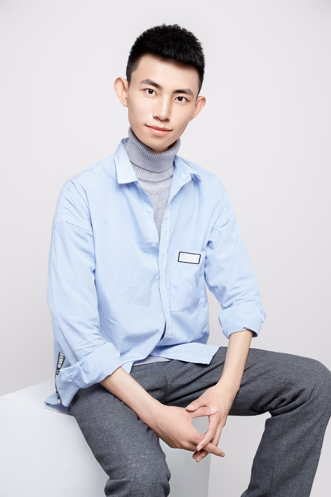

|
Xiang Chen (陈翔)
|
 |
Ph.D. candidate
Intelligent Media Analysis Group (IMAG)
Nanjing University of Science and Technology (NJUST)
No. 200 Xiaolingwei Street
Nanjing, China
E-mail: chenxiang@njust.edu.cn
|
About Me
I am currently a first-year Ph.D. candidate in the School of Computer Science and Engineering, Nanjing University of Science and Technology, advised by Prof. Jinshan Pan. Before that, I received my M.S. degree from the College of Electronic Information Engineering, Shenyang Aerospace University, advised by Prof. Yufeng Li.
Researches
My research interests include:
News
Publications
Xiang Chen, Jinshan Pan*, Jiyang Lu, Zhentao Fan, Hao Li. "Hybrid CNN-Transformer Feature Fusion for Single Image Deraining", Association for the Advancement of Artifical Intelligence (AAAI), 2023. [paper][code] Xiang Chen, Jinshan Pan, Kui Jiang, Yufeng Li*, Yufeng Huang, Caihua Kong, Longgang Dai, Zhentao Fan. "Unpaired Deep Image Deraining Using Dual Contrastive Learning", IEEE Conference on Computer Vision and Pattern Recognition (CVPR), 2022. [paper] Xiang Chen^, Zhentao Fan^, Pengpeng Li, Longgang Dai, Caihua Kong, Zhuoran Zheng, Yufeng Huang, Yufeng Li*. "Unpaired Deep Image Dehazing Using Contrastive Disentanglement Learning", European Conference on Computer Vision (ECCV), 2022. [paper] Xiang Chen, Yufeng Li*, Longgang Dai, Caihua Kong. "Hybrid High-Resolution Learning for Single Remote Sensing Satellite Image Dehazing", IEEE Geoscience and Remote Sensing Letters (GRSL), 2022. [paper] Xiang Chen, Yufeng Huang*. "Memory-Oriented Unpaired Learning for Single Remote Sensing Image Dehazing", IEEE Geoscience and Remote Sensing Letters (GRSL), 2022. [paper][code] Xiang Chen, Yufeng Li*, Caihua Kong, Longgang Dai. "Unpaired Image Dehazing With Physical-Guided Restoration and Depth-Guided Refinement", IEEE Signal Processing Letters (SPL), 2022. [paper][code] Yufeng Li, Xiang Chen*, Caihua Kong, Longgang Dai, Yufeng Huang. "A Deep Hourglass-structured Fusion Model for Efficient Single Image Dehazing", Multimedia Tools and Applications (MTAP), 2022. [paper][code] Yufeng Li, Caihua Kong*, Longgang Dai, Xiang Chen. "Single-Stage Detector With Dual Feature Alignment for Remote Sensing Object Detection", IEEE Geoscience and Remote Sensing Letters (GRSL), 2022. [paper] Yufeng Li, Zhentao Fan*, Jiyang Lu, Xiang Chen. "TAO-Net: Task-Adaptive Operation Network for Image Restoration and Enhancement", IEEE Signal Processing Letters (SPL), 2022. [paper] Kejian Hu, Zhichen Zhang, Xiaowen Cai, Xiang Chen, Nanfeng Jiang, Yu Zhou, Tiesong Zhao*. "HD-Net: Hierarchical Distillation Network for High-Efficiency Single Image Deraining", IEEE International Workshop on Multimedia Signal Processing (MMSP), 2022. [paper] Yufeng Li, Longgang Dai*, Hongxia Ni, Caihua Kong, Xiang Chen. "Focus on Local: Transmission Line Defect Detection via Feature Refinement", Signal,Image and Video Processing (SIVP), 2022. [paper] Pengpeng Li, Jiyu Jin*, Guiyue Jin, Lei Fan, Xiao Gao, Tianyu Song, Xiang Chen. "Deep Scale-space Mining Network for Single Image Deraining", IEEE Conference on Computer Vision and Pattern Recognition Workshops (CVPRW), 2022. [paper] Longgang Dai^, Hongming Chen^, Yufeng Li*, Caihua Kong, Zhentao Fan, Jiyang Lu, Xiang Chen. "TARDet: Two-stage Anchor-free Rotating Object Detector in Aerial Images", IEEE Conference on Computer Vision and Pattern Recognition Workshops (CVPRW), 2022. [paper] Xiang Chen*, Yufeng Huang*, Lei Xu, Kaiyuan Li. "Single Image Desmoking via Attentive Generative Adversarial Network for Smoke Detection Process", Fire Technology, 2021. [paper] Xiang Chen, Yufeng Huang*, Lei Xu. "Multi-Scale Hourglass Hierarchical Fusion Network for Single Image Deraining", IEEE Conference on Computer Vision and Pattern Recognition Workshops (CVPRW), 2021. [paper] Yufeng Li, Xiang Chen*. "A Coarse-to-Fine Two-Stage Attentive Network for Haze Removal of Remote Sensing Images", IEEE Geoscience and Remote Sensing Letters (GRSL), 2021. [paper][code] Yufeng Huang^, Xiang Chen^. "Single Remote Sensing Image Dehazing Using a Dual-Step Cascaded Residual Dense Network", IEEE International Conference on Image Processing (ICIP), 2021. [paper][code] Xiang Chen^, Yufeng Huang^, Lei Xu. "Multi-scale Attentive Residual Dense Network for Single Image Rain Removal", Asian Conference on Computer Vision (ACCV), 2020. [paper][code]
Note: * indicates the corresponding author, ^ indicates the equal contribution.
Full list of publications in Google Scholar.
Awards
Third Prize of Huawei Terminal Camera Academic Star Competition, 2022. Outstanding College Student Party Member Pacesetter of Liaoning Province, 2022. (10 awardees in total) Outstanding Graduate of Liaoning Province, 2022. Top 5 Prize in China of the iCAN Innovation Contest, 2021. Chinese National Scholarship, 2021. Second Prize of Report of the 1st Graduate Academic Forum of Chinese Journal of Image and Graphics, 2021. Person of the Year, Huayu College Student of Liaoning Province, 2021. (20 awardees in total) National Bronze Prize of the 7th "Internet+" College Student Innovation and Entrepreneurship Competition, 2021. Second Prize of master group of the 1st CCF/YEF Outstanding College Student Academic Show, 2021. National Bronze Prize of the 12th "Challenge Cup" College Student Entrepreneurship Planning Competition, 2020.
Academic Services
Program Committee Members of AAAI 2023, ACM MM 2022. Journal Reviewers of IEEE TNNLS, IEEE TCSVT, IEEE Access. Conference Reviewers of CVPR 2022/2023, ECCV 2022, ACCV 2022, WACV 2023. Association Members of IEEE, CVF, CCF, CSIG, CAAI.
|